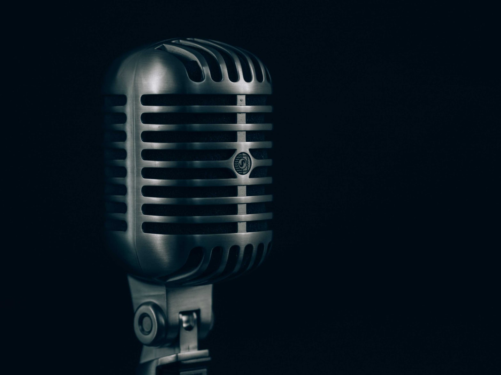

LFR & DLFR
ABOUT THE EVENT
Line follower is an autonomous robot which follows either black line in white area. Robot must be able to detect particular line and keep following it. For special situations such as cross overs where robot can have more than one path which can be followed, predefined path must be followed by the robot. Train your brain to device a variegated algorithm which harmonises your hardware and software skills to overcome the cunning track. Points will be awarded on the basis of time required for completion of track and accuracy with which it is achieved. The team with maximum points will be crowned as winners.
OBJECTIVE
Design a mobile bot that follows the given black line and finishes the track in minimum possible time and with maximum accuracy.
BOT SPECIFICATION
1. Bot size: 30X30X10 cm.
2. Max Battery Rating: 12V, 1.2 A
3. Motor Specification: 100 rpm -200 rpm
TEAM SPECIFICATIONS
1.Your team should not be more than 5 members.
COMPETITION RULES
The competition will be held in two stages namely PRELIMS and FINALE, the teams for finale will be selected on the basis of the performance in prelims. The track for finale will be disclosed 30 minutes before its commencement. Any member of the registered team is found damaging or making changes in the track, then the team will be disqualified.
POINT DISTRIBUTION
Each team participating will be awarded 1000 points in the beginning of the competition.
Points will be reduced from the awarded points in the following manners:
Points will be deducted according to the time taken by the bot to complete the track.
25 points will be deducted per 30 seconds.
Each team will rewarded 1 free reset which provides them the opportunity to put back their bot on the line ( in case the bot gets confused and goes out of track ).
For subsequent resets 100 points will be deducted per reset.
The team gaining maximum points will be declared as winners.
COORDINATORS
- Nihar Shatharajupally
8131997755
nihars1996@gmail.com - Vikash Kumar
8014049576
vikashkumar1508@gmail.com - BaluRam Choudhary
9089929520
rjbrjat@gmail.com - Rupesh Kumar
9615642157
rajrupesh027@gmail.com